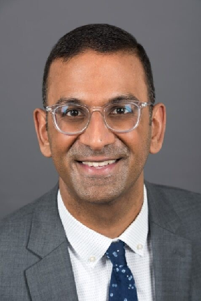

Getting to know Vijay
Vijay Sankaran, MD, PhD is the definition of peak performance in his field of scientific research. The Sankaran Lab, in brief, uses “human genetics to study hematopoiesis and how this process goes awry in human disease”. This is merely an “in a nutshell” description. Vijay is hyper involved on many fronts in cutting edge science, not to mention that he holds a special place in the hearts of CDN as he is a critical member of our elite Leadership Team!
This version of our Researcher Spotlight takes a slightly different, Q&A-style narrative, because Vijay’s tireless work has inspired a massive breakthrough in Sickle Cell Anemia treatment.
Let’s dig in!
Q: We wanted to talk to you about the recently, December 2023, FDA approved gene therapy Casgevy, to treat transfusion-dependent beta thalassemia (TDT), and sickle cell disease. As we understand, this is the culmination of work you started during your PhD back in 2004, in Stuart Orkin’s lab. Could you please tell us a bit about what piqued your interest back then to work on this project?
A: Oh, well, maybe I'd answer that in a little bit of a different way, if that's okay? – Because I think it's a great question! – I think that I became very fascinated by the problem we were trying to address, which was: ‘how during human development is there this switch from a fetal form of hemoglobin that you express throughout much of gestation to the adult human’ – And we had known from decades of work, including work here at Boston Children's Hospital, that if you can induce that fetal form of hemoglobin, or if you naturally just have more of the fetal hemoglobin, you actually can do much better if you have sickle cell disease or thalassemia…and that was known for a long, long time. Yet how this process was regulated, was really unknown.
I bring that up because when I entered my PhD I said I really wanted to understand this problem, maybe a little bit naively, but there was a lot known about it and not very much known about the molecular basis of it.
When I started my PhD and wanted to address this problem, I went to my PhD advisor and he was a little bit skeptical because he'd worked on this decades ago. And soon thereafter, he said, “why don't you help me write a grant?” and that grant renewal actually received an almost perfect score - at the time it was like 110 or something. It was really well received. But I can tell you retrospectively (and funnily) that every one of the aims of that grant proposal actually totally failed.
The aims failed in part because there were assumptions made about the system. The thing which really helped us make a lot of advances was advances in genomics and human genetics. And specifically, we were able to identify this association in the BCL11A gene through genome-wide association studies.
So I bring all that up because, as we think about the CDN and the value of emerging genomic approaches that are happening - to me, I see tremendous value because as I look back to what we were able to do, we had a question in mind – but couldn't answer it – and it was really through advances in genomics and human genetics, that we could make any headway to understand it.
I say all of this because I think it's a broader message that I hope will ring true many more times! That's what excites me about all these advances in single cell biology. We now have an opportunity, I think in many ways, akin to what happened twenty-ish years ago, that will allow us to really start to make some of those important advances.
Q: Could you explain a little bit about what Sickle Cell disease is, and specifically transfusion-dependent beta thalassemia (TDT) is, how it works, and its prevalence?
A: At a basic level, both sickle cell disease and beta thalassemia, are actually the most common monogenic diseases in the world because of selection for carriers who have these mutations, because the mutations confer resistance to severe forms of malaria, it turns out. But really both of them occur in the same gene! So due to mutations the adult beta hemoglobin molecule (HBB is the gene), sickle cell disease contains a specific point mutation that causes the hemoglobin protein to have a tendency in the deoxygenated state to polymerize inside red cells. There are these polymers of hemoglobin that form, and they deform the red cells and cause red cells to then stick in small blood vessels, blocking blood circulation, causing pain and organ damage as a result.
Thalassemia, in contrast, is a condition also due to mutations in the adult beta hemoglobin molecule, but it's moreso due to reduced production of the adult beta hemoglobin molecule. With that, you have a production issue.
Really, the problems in beta thalassemia are not because of the deficiency of beta hemoglobin, but actually because of the imbalance between the other part of hemoglobin, the alpha hemoglobin and the beta hemoglobin. If you have too much of the free ‘alphas’, they actually precipitate themselves and cause precursors in the bone marrow to die and not be produced effectively.
The reason I bring up that both of these are showing these two problems - the adult beta hemoglobin molecule - is because it turns out that if you can get rid of, or turn down the amount of adult beta hemoglobin, you can help with both of these conditions! The way you naturally do that is: during gestation you have this fetal form of hemoglobin and that is a beta-like hemoglobin molecule which substitutes for beta hemoglobin. So nature has sort of devised this ‘way’, and it turns out that children with sickle cell disease or thalassemia don't typically manifest until later infancy with symptoms typically because they're protected while this fetal hemoglobin is ‘on’. So, nature has sort of shown us how to do this! We just didn't know what the molecular regulation of that process was.
Q: Why do we need these two Beta Hemoglobin Molecules/why don't we just keep one for the entire time?
A: I think it's a really great question! Actually, most mammals had done just that. Outside of old world primates, almost every other mammal has just one adult hemoglobin – and no switching process. Some of it might have to do with the fact that fetal hemoglobin has a higher oxygen affinity, so it facilitates a transplacental oxygen transport. But it turns out, for example, that if you measure mouse red cells – mice do a fine job of transferring transplacentally oxygen – there’s just other adaptations. I bring this up because there are humans naturally with mutations or deletions that cause high levels of fetal hemoglobin, and even if you have 98% fetal hemoglobin, you can give birth just fine. So there's ways that you can adapt and get around this, but of course, evolution doesn't care about the individual that cares about thousands of individuals. But it's a really great question because ‘where and how it evolved’ is something that we don't fully understand.
Q: What is the main role of BCL11A?
A: BCL11A serves in some ways as a rheostat to regulate fetal hemoglobin. What we know so far is, it acts as a transcription factor – and when we uncovered BCL11A’s role in fetal hemoglobin switching, it turned out it was really well studied for its role in B lymphocyte development and its role in neural development.
Its role in red cell production was just not at all appreciated yet, right? It wasn't one of the key regulators of red cell production canonically. I think of it as an accent, because as soon as we found out, we said ‘alright, let's turn it down, see what happens at the time’, with sort of the antiquated siRNA or shRNA approaches. Immediately, we could see this result that you increased fetal hemoglobin robustly. It was remarkable. I say it was remarkable because we had been trying all of these other factors that we had had hypotheses about and all of them had failed, right? So we knew the system was working as we expected and yet, we never hit upon something that had this effect.
Q: A little bit later in 2015, Daniel Bauer published a paper where he found out about the enhancer that promotes the expression of BCL11A, can you tell us a bit about your experience as it relates?
When did you think about using the CRISPR-CAS9 system as a mode of therapy?
A: Right, yes, that is a very interesting story!
They had been looking for where the genetic association was. We knew it was in the BCL11A gene, but it was in a non-coding sequence. It turned out that it was mapped to a region that contained this enhancer. The funny part of the story is they identified a large ~10 kb region that included the variation. But, to this day, we still do not understand how these variants act. I only bring this up because I still think that there's more biology to learn, a lot to learn, about how this variation acts, and things that we're trying to study related to this. Because they identified an enhancer, they started to go into and use CRISPR tiling approaches to actually map the most active parts of that in cancer. One of the regions they mapped in the 2015 paper from Canver and colleagues was a key active enhancer. Editing that region — which is essentially what Casgevy does — can turn down BCL11A levels. In 2012 and 2013, it started to be applied to human cells so I mean, just remarkable to see how quickly things went.
I think one message I would say to younger folks is that I think one of the most exciting things for me is what's to come! As I look at 'that’ progression, I think in some ways the CDN efforts are going to lead to hopefully many, many more advances - much akin to this, right!? Because enabling tools, i.e. if it wasn't for GWAS, we would never have been able to identify BCL11A, the HAPMAP project, and the ability to understand human genetic variation. If it wasn't for CAS9 and CRISPR CAS9, there wouldn't be an approach to readily disrupt this regulatory element. If it wasn't for efforts like the ENCODE effort, there wouldn't have been the same understanding of some of these non-coding elements. I still think that there's much more to understand even about this biological process. But I would argue, you know, that these types of approaches and technologies really drive the kind of innovations that we're seeing. One may argue, ‘why would a children’s hospital need a single cell effort' and this is exactly why, and what we need! Technologies are what drive the advances in innovations!
To tell an “aside”/good story: when our 2008 paper was published in Science, describing the B-Cell regulator (which switched from fetal to adult hemoglobin), on just the next page after our article – literally sharing like the physical paper – because Science used to publish ‘back to back’, there was a paper on Bacterial Immunity from researchers describing CRISPR as a bacterial defense system. That was actually the first description of CRISPR-Cas9 being this sort of bacterial defense system. Thinking now, that was remarkable, right? I didn’t pay any attention to that back then.But it just goes to show that this is where convergences of biology are so important and so valuable. They are the things that come together. I mean, If you bring people who are interested in pediatric diseases and you introduce them to single cell genomics, which is what you're doing, who knows what can happen!
Q: What do you think are the key steps that have enabled such quick turnaround from the academic setting to now being an FDA approved therapy?
A: Well, I think there's probably more complexity to it. The reason I say that is, because once it was clear that it was a good target – I think that there were lots of companies who were interested in it even before the enhancer was identified – There were companies already thinking about ‘how do we neither use gene therapy approaches to turn it down?’. Or, how do we edit BCL11A directly? It turned out. Because of off-target effects in blood stem cells, that wasn't a great idea, but there was also some interest and true that there were companies that were actually starting to work on this probably well before Vertex and CRISPR Therapeutics started to work on this, a few companies were in that pool. I think that it's also just a testament to what Vertex and CRISPR did in terms of execution, how they ran the clinical trials and how they implemented this. Because while it's a remarkable success and has gone remarkably well, I think that it's also testament to the fact that they could kind of come out and say, ‘look, this approach works now in about 80 some odd patients…I think the papers are going to be publishable…’. Describing those clinical trials, and that's really an implementation issue – I think it's something we have to bear in mind that sometimes it's like, ‘okay, we make the great discovery and it can just get right to a therapy’... And there's a huge amount of hurdles to come and to overcome. It is really just a testament to the fact that they figured out: How do you best dose patients with this? How do you build on this? – On the other hand, the one thing I’ll just remind you of, which I think is that, the exciting opportunity in some ways, is that ‘this’ is really built on decades of studies of the blood stem cells. And so were it not for those kinds of advances – We wouldn't be able to necessarily manipulate the blood stem cells and transplant them back in the way that we can. So I actually think that this also speaks to ‘why do we need to even just get basic insights into blood stem cells?’ – I would argue that's really what has enabled and hopefully we'll continue to enable further advances in this field!
Q: Can you elaborate a bit on how the therapy works?
A: Yes! So you actually take out the blood stem cells, you collect them through kind of, you could mobilize blood stem cells – It turns out if you give this CXCR4 antagonist. In sickle cell patients, you don't need to give another drug called GCSF – Now, I think that that's actually where the limitation is though right now. So basically the patients in these clinical trials, they've had to go for four separate collections…on average, to be able to get enough blood stem cells. So you need to get enough blood stem cells! I would challenge the people thinking about these problems with: What if you can do that with one collection? Wouldn't that improve patients, would that improve the product? So that itself is advancement waiting to happen…an advancement that I think single cell genomics is inevitably going to contribute to, right?
Because you can study blood stem cells in way that you can't with any other technology and using this kind of approach, then you can take and modify these cells – well, what, if we can better understand how we get better culture stem cells ex vivo and handle them, and can only culture them over a few days before they lose their ability to act to stem cells – that limits the therapies right? Because they have to be put back.
There are a huge amount of innovations that have yet to happen that will enable that. In some ways I feel like it's exciting. You can do it…but version 2.0, version 3.0, those are waiting to happen. And I hope that people here and elsewhere will start to help those advances happen.
Q: This is something that you probably started working on 15, 20 years ago…now that you have seen it come to fruition, how did you celebrate?
How did you feel when you saw that this finally was getting actual, actionable clinical results, and then that patients were actually being treated with this?
A: Well, I will say I've been following the clinical trials, so when the approval came about it wasn't a surprise…we sort of had, at the end, some warning…[laughing] you know, there's lots of ‘orders’ and ‘people’ who had sort of been ‘talking’...and I think in some ways it was really exciting to see what had happened. In many ways though, seeing the ‘approval’ really felt like it lit an additional fire! The ‘approval’ said [to me], “Gosh, if that worked shouldn't we redouble our efforts to continue to do what we're doing, to try to use insights from human genetics, to understand more biology, to help more patients?”
So in some ways I think it served as a real big inspiration! The other thing to me is…it just makes me even more excited about where the future is going to! Because, as we think about the real nuances of this, you realize, “well, It's good, but man the things that we're doing in the lab today are even better!” – And I say ‘we’, in the broader
sense like, “shouldn’t ‘we’ move this stuff?...to the clinic, in a way that we could not do in any other setting?”
A lot of the time people say, “Isn’t clinical care where it needs to be?...shouldn’t a clinical hospital focus on the here-now in implementation?” – And, sure they should, but they should also focus on, as BCH does, innovating and on developing the next generation of therapies. And to me, that's where we're going to see huge advances!
You know, you had sort of said early on, “Well, it [from my beginning’s and findings in 2008 as a PhD student, to Orkin in 2016, to now – clinical trials for a Sickle Cell therapy] seems like a fast time scale? [Smiling] I hope that we look back at this interview and know 'that' was a long time scale...we were saying then it was a fast timeline but, now [in the future] 'that' was slow...what were we talking about back in the day [2024]?"
I would be disappointed if say 20 years from now, we aren't saying "wow...for [only] years from discovery to medication!"...This would be a satisfying way to see things [smiling]!
Q: How do you envision the future of gene-editing therapies from here?
A: Well, I think there's a couple of lessons! I think one thing is BCL11A, by targeting it, you're not at all targeting the primary issue. Like I said, the other mutations are in beta hemoglobin, they are in sickle cell disease, thalassemia etc…So, maybe there's workarounds for other diseases that we need to understand. And I think that to me, that's why it's exciting to understand some of the underlying biology, to understand the pathogenesis, the disease – because maybe you don't want to target a primary lesion, or maybe you cannot target it…But, then maybe there's a workaround?
And I hope that as we better understand biology, we'll find more of those workarounds, and many of those workarounds might be good targets for therapies.
One lesson I would walk away with is – and as I mentioned before, historically, the field of hemoglobin switching was being worked on for decades [and I'm biased] – Genomic approaches allowed something that no one could have predicted to be identified. And to me, that's a really important lesson! I think it says even where a lot of times genomic approaches are critiqued, e.g. people say, “what's the value of this?”, well I think this is a clear cut example where the value proposition is there.
It was easy to dissect this because we had a lot of background on how we think about red cell biology, how we think about globin gene regulation…and how much biology is waiting to be discovered. We want to come through these kinds of approaches. So that's the second lesson I would take away.
A third thing to walk away with is…I think what was done is exciting, but I think what's to come is even more exciting! I think there's still more to be done and I think that there's many more questions to be asked. I hope that those who are addressing those questions will not only lead to interesting scientific advances, but also will lead to really important clinical advances.
And I think that that's why being in a place like Boston Children’s Hospital, for me, is particularly exciting, right? Because I can spend time across the street, seeing patients. And then working with people like you [CDN, other scientists etc], it's also awesome, right? Because it's like gosh, this is going to lead the next generation of how we think about biology in a different way…and that's the fun part of what I do day to day!…It's the fun part about being in a place like Boston, right? There's people thinking about all sorts of things across all of the same spectrum and we all kind of get to play in the same sandbox…So it's fun, you know?